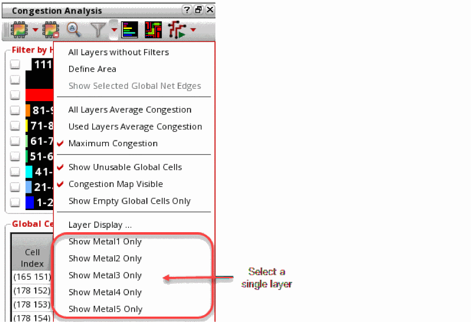
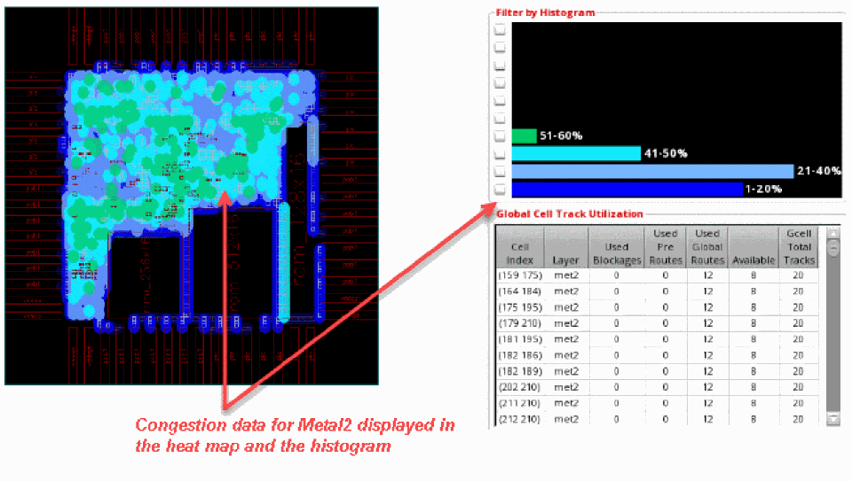
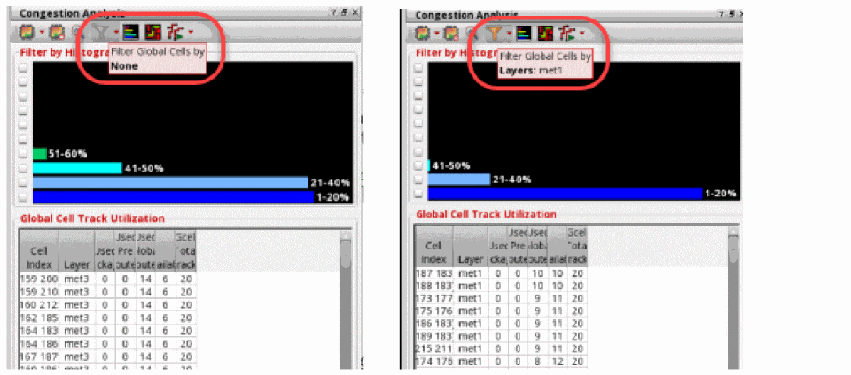
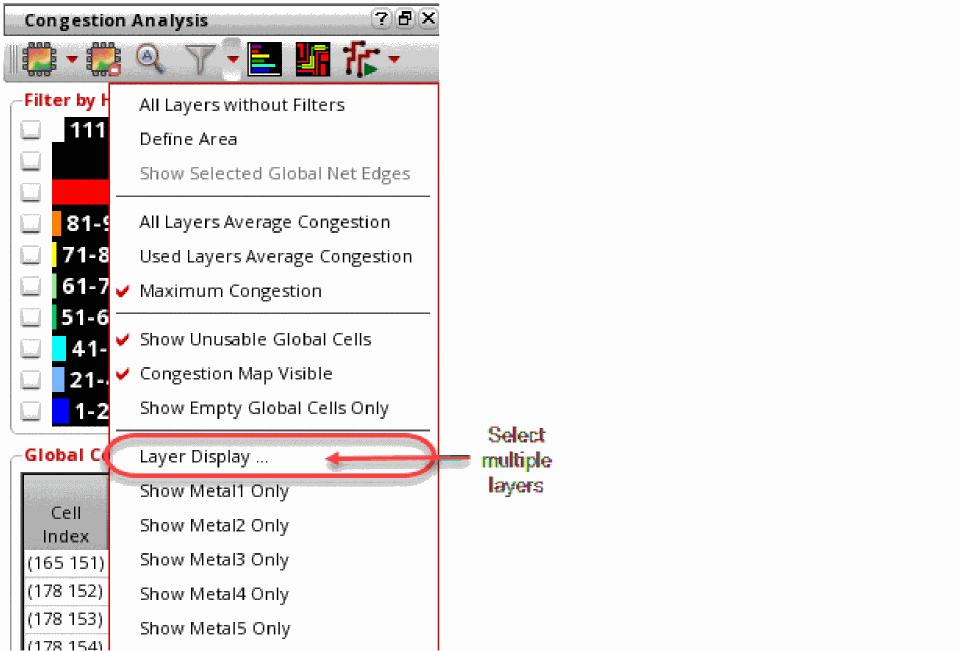
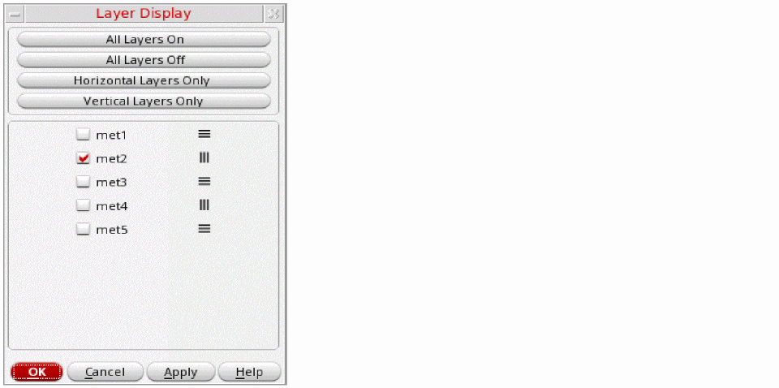
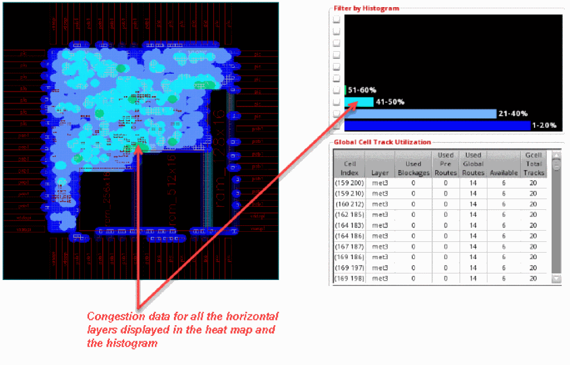

Filtering by Layers
You can quickly view congestion results either in the heat map or the histogram by filtering the results by layer. The two ways to do this are as follows.
Selecting a Single Layer
- Click the drop-down arrow next to the Filter Global Cells by icon on the Congestion Analysis toolbar.
-
Choose a layer for which you want to view congestion. For example, select Show Metal1 Only from the drop-down list.
The following figure displays the congestion data of the selected layer in the heat map, histogram, and the global cell track utilization table.
The view in heat map, histogram, and the global cell track utilization table changes to display the variation in the congestion data depending on the metal layer selected.
When the layer filter is set to a single layer, the color of the filter icon is changed from Grey to light orange. The tooltip is also updated according to the filter applied.

Selecting Multiple Layers
- Click the drop-down arrow next to the Filter Global Cells by icon on the Congestion Analysis toolbar.
-
Click the Layer Display option.
The Layer Display form is displayed. Using this form, you can choose multiple layers for which you want to display congestion.
 - Choose the layers for which you want to display the congestion data.
-
Click OK.
The following figure displays the congestion data for only the horizontal layers.
The view in the heat map, histogram, and the global cell track utilization table changes to display the variation in the congestion data depending on the metal layers selected.
Related Topics
Running Global Routing and Congestion Analysis
Return to top